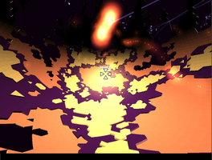
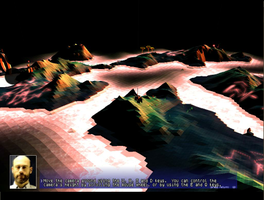
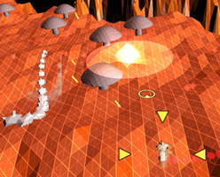

Darwinia
Dieser Artikel wurde für die folgenden Ubuntu-Versionen getestet:
Ubuntu 16.04 Xenial Xerus
Zum Verständnis dieses Artikels sind folgende Seiten hilfreich:
Darwinia  ist ein Echtzeitstrategiespiel, welches auf 3D-Retrografikstil setzt. Es ist der Nachfolger von Uplink. Die Welt von Darwinia ist ein von Dr. Sepulveda geschaffener virtueller Themenpark. Hier tummeln sich die mit einfacher künstlicher Intelligenz ausgestatteten Darwinians... Der Spieler kann diese Wesen studieren und muß die von einem Virus infizierte Welt retten. Hier gilt es mittels Evolution leistungsfähigere Darwinians zu schaffen um die Viren zu besiegen. Doch auch die Gegenseite entwickelt sich...
ist ein Echtzeitstrategiespiel, welches auf 3D-Retrografikstil setzt. Es ist der Nachfolger von Uplink. Die Welt von Darwinia ist ein von Dr. Sepulveda geschaffener virtueller Themenpark. Hier tummeln sich die mit einfacher künstlicher Intelligenz ausgestatteten Darwinians... Der Spieler kann diese Wesen studieren und muß die von einem Virus infizierte Welt retten. Hier gilt es mittels Evolution leistungsfähigere Darwinians zu schaffen um die Viren zu besiegen. Doch auch die Gegenseite entwickelt sich...
Darwinia ist der zweite Titel von Introversion Software. Die Fortsetzung Multiwinia unterstützt den Mehrspieler-Modus. Weitere Titel von Introversion Software sind Uplink und Defcon.
|  |  |  |
| Menü | Tutorial | Mod: arcaderemix |
Installation¶
Folgendes Paket muß installiert [1] werden:
libstdc++5 (universe)
 mit apturl
mit apturl
Paketliste zum Kopieren:
sudo apt-get install libstdc++5
sudo aptitude install libstdc++5
Desura¶
Das Spiel kann über die Internetseite oder den Client zur Spieleliste hinzugefügt und gestartet werden [10].
Projektseite¶
Anschließend den aktuellen Installer von introversion.co.uk  oder holarse-linuxgaming.de herunterladen und Ausführrechte [2] setzen. Anschließend den Installer entpacken [3]:
oder holarse-linuxgaming.de herunterladen und Ausführrechte [2] setzen. Anschließend den Installer entpacken [3]:
sh darwinia-full-1.3.0.sh --keep --noexec
Nun wechselt man in den Ordner darwinia, verschiebt den Starter in den Basisordner
mv bin/Linux/x86/darwinia .
und löscht überflüssige Daten:
rm -r bin setup.* lib/libgcc_s.so.1
Um an die restlichen Spieledaten zu gelangen muss auf Wine ausgewichen werden.
Wine¶
Zunächst wird das Spiel unter Wine installiert [4]. Im nächsten Schritt wechselt man in den versteckten Ordner ~/.wine/drive_c/Programme/Cinemaware Marquee/Darwinia im Homeverzeichnis. Die Dateien main.dat und sounds.dat werden in den vom Installer angelegten Spieleordner kopiert und zwar in den Unterordner lib. Das Video cinemaware.avi in das Basisverzeichnis des Spieleordners kopiert.
Hinweis:
Vor dem Kopieren der Dateien kann der aktuelle Patch via Wine aufgespielt werden.
Über ./darwinia kann das Spiel nun gestartet [5] oder zum Menü [6] hinzugefügt werden.
Patch¶
Um das Spiel auf den aktuellen Stand zu bringen lädt man von hier die Windowsversion herunter, da diese aktueller ist. Die Datei (z.B. darwinia-patch-1.5.11.exe) entpacken [8]. Anschließend die enthaltenen Dateien language.dat und patch.dat in den Spielordner kopieren.
Hinweis:
Ein Patch ab Version 1.5.11 erlaubt es das Spiel auf weitere Sprachen umzustellen.
The Humble Introversion Bundle¶
Das Spiel aus der Aktion The Humble Introversion Bundle als .deb-Paket herunterladen und installieren [9].
Nach erfolgreicher Installation kann das Spiel über "Spiele -> Darwinia" gestartet werden.
Mods¶
Nachdem man Darwinia durchgespielt hat werden die Mods freigeschaltet. Sofern man nicht so lange warten möchte die Datei preferences.txt im Ordner ~/.darwinia/full um die folgenden Zeilen ergänzen [7]:
ModSystemEnabled = 1 Mod = none
Mods können von diversen Internetseiten bezogen werden:
Nach dem entpacken [8] werden die benötigten Dateien im Homeverzeichnis in den Ordner ~/.darwinia/mods/ kopiert. Dieser muß ggf. noch angelegt werden.
Problemlösungen¶
Mods¶
Sollte das Spiel nach dem einspielen eines Mods abstürzen in der Datei preferences.txt folgende Änderungen vornehmen [7]:
UserProfile = none Mod = none
Hinweis:
Nicht jeder Mod funktioniert unter Linux. Dies liegt daran, dass einige von Windowsnutzern geschrieben wurden wo die Verwendung von Groß- bzw. Kleinschreibung andere Auswirkungen hat als unter Linux.
Handbuch¶
Das Handbuch zum Spiel kann von der Herstellerseite als PDF heruntergeladen werden.
Demo¶
Ein Demo kann von introversion.co.uk heruntergeladen werden.
Tastenkürzel¶
| Tastenkürzel | |
| Taste(n) | Funktion |
| Esc | Menü aufrufen - Grafik-, Steuer- und Soundoptionen sowie Sprache einstellen. |

Infobox¶
| Darwinia | |
| Genre: | Echtzeitstrategie |
| Sprache: |     |
| Veröffentlichung: | 2000 |
| Publisher: | Introversion Software |
| Systemvoraussetzungen: | Prozessor mind. 600 MHz - mind. 128 MB RAM - mind. 200 MB Festplattenspeicher |
| Medien: | CD (1) / Download |
| Strichcode / EAN / GTIN: | 743999142206 |
| Läuft mit: | nativ |
- Erstellt mit Inyoka
-
 2004 – 2017 ubuntuusers.de • Einige Rechte vorbehalten
2004 – 2017 ubuntuusers.de • Einige Rechte vorbehalten
Lizenz • Kontakt • Datenschutz • Impressum • Serverstatus -
Serverhousing gespendet von